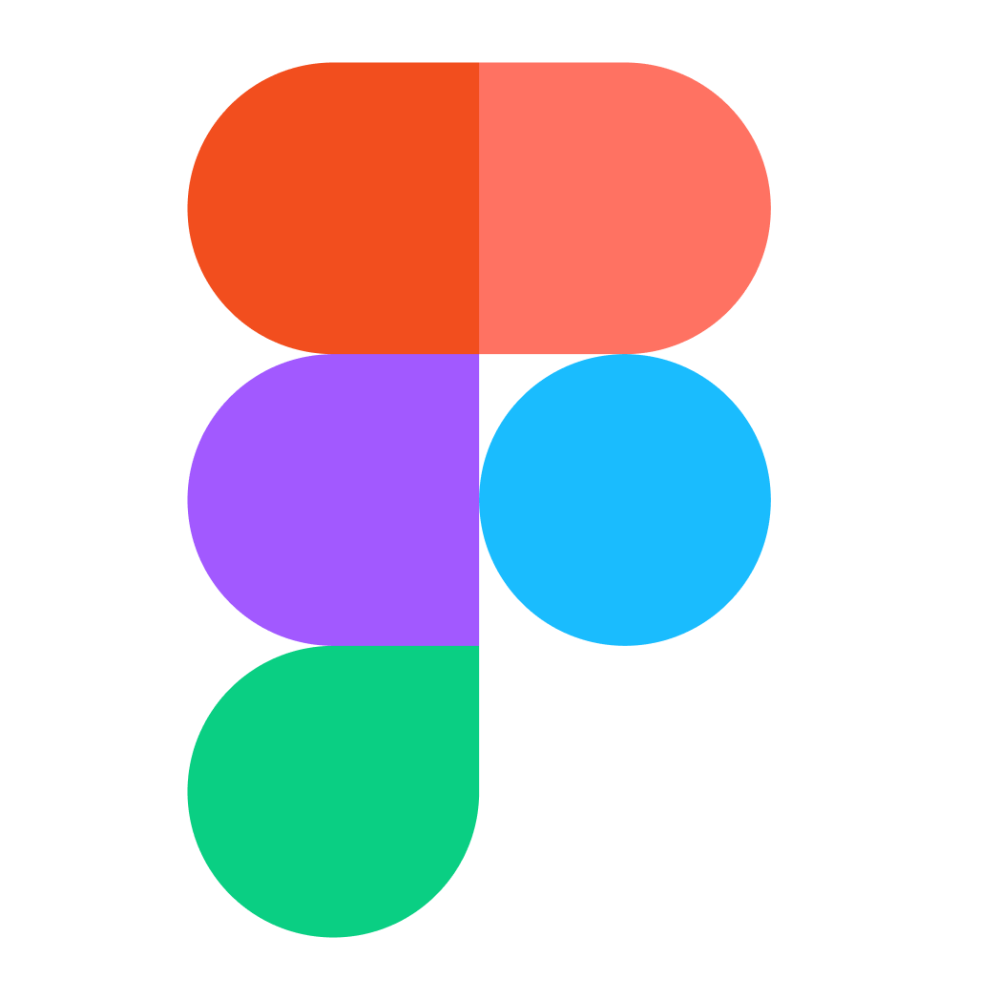
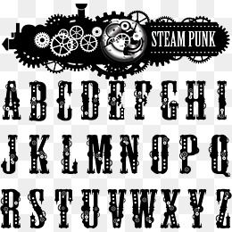

Кроссбраузерность
Сайт должен одинаково хорошо смотреться во всех популярных браузерах. Opera, Yandex, Google Chrome, Microsoft Edge, Safari, Firefox, Netscape.

Соответствие дизайна
если сайт верстается по опреднлённому макету дизайнера, то он должен быть выполнен со 100%-м сходством и соблюением шрифтом,цвета,отступов и т.д..

Шрифты
Не больше трёх шрифтов на сайте.Один для всех заголовков,второй-для всех остальных текстов, третий- для всех остальных текстов,третий-для выделений важных слов.Должно хватить

Цвета
обычно на сайте два цвета:ведущий и акцентный.Подобрать удачнуюцветовую пару можно за счёт насмотренности или специальных инструментов.